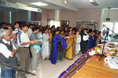

Saraswati Puja · February 2001
This is the surviving photograph displayed on the MyCalnet homepage. The larger linked file, spuja2001big.jpg, has not been recovered. This image is shown at its original size.

Return to the original MyCalnet homepage
Source notes
Original homepage photograph: http://www.mycalnet.org/image/spuja2001.jpg. Its preserved capture bytes remain unchanged. This labelled alternative replaces a script-based popup; no script or upload service is active.